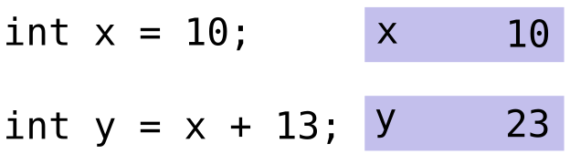

Introduction
Expressions are combinations of operators, values (constants), and variables which are arranged according to the rules established througout the code. Thus, every expression is any part of a statement that returns a value, as in the follow example:

This statement creates a box to store the value of \(x\) and another to store the value of \(y\), which is equal to the expression \(x\) plus 13 (\(y=23\)). Now consider a more complex statement:

- The results of the expression \(3 - x\) is stored in the variable \(y\)
- The expression \(y = 3 - x\) returns the value of \(y\), and it is stored in the variable \(v\)
- The results of the expression \(y \times \left(\frac{v}{5} + x\right)\) is stored in the variable \(z\)
Remember that multiplication and division occur before addition and subtraction. Ex.:
1-3*4 = -11
2/3-4*2/3 = -2
2/3-4/4*2/3 = 0The operator precedente dictates the order of evaluation of operators in an expression. In C, each operator has a fixed priority order to be executed or precedence in relation to other operators. As multiplication or division has higher precedence than addition and subtraction, in the expression \(\frac{2}{4}-3+ 4 \times 6\), firstly the subexpressions \(\frac{2}{4}\) and \(4 \times 6\) will be evaluated (Step 1 in the Figure 1), and then addition and subtraction (Step 2 in the Figure 1). Note that multiplication and division, or addition and subtraction have same precedente, then tey are evaluated from left to right due to its associativity.

Figure 1: Precedence order
Associativity defines the order in which operators of the same precedence are evaluated in an expression, and it can be either from left to right or right to left (Figure 2). Generally, addition, subtraction, multiplication, and division operators are usually left-associative while assignment operators are typically right-associative. Besides, there are operators that have no defined behavior when used in sequence over an expression, and they are called as non-associative (Figure 2). Note that when we include parentheses, we can force an expression to be right-associative rather than left-associative as usual.
Figure 2: Example of left-associative, right-associative, and non-associative